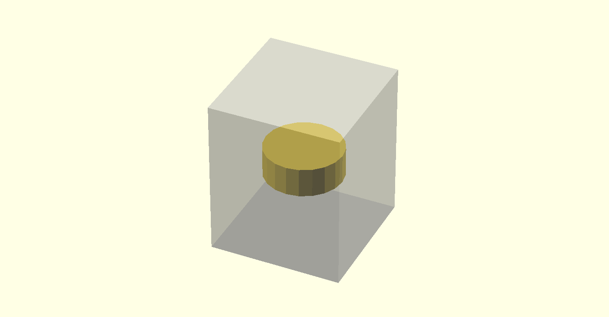
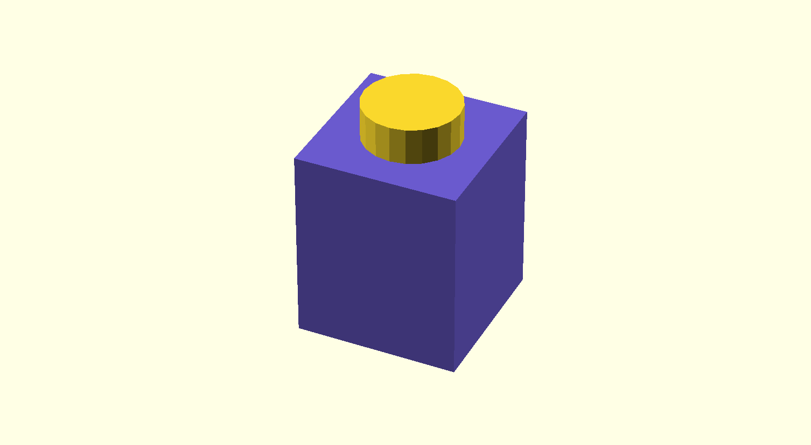
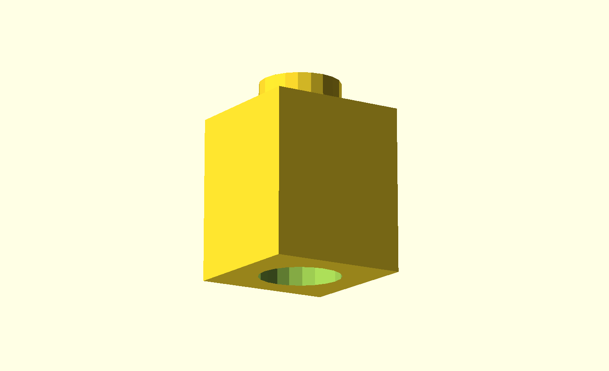
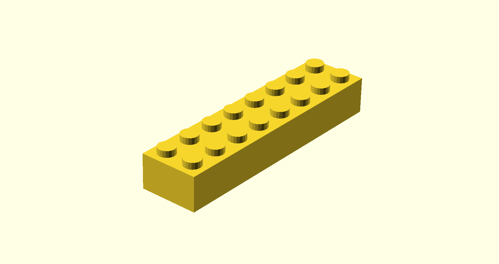
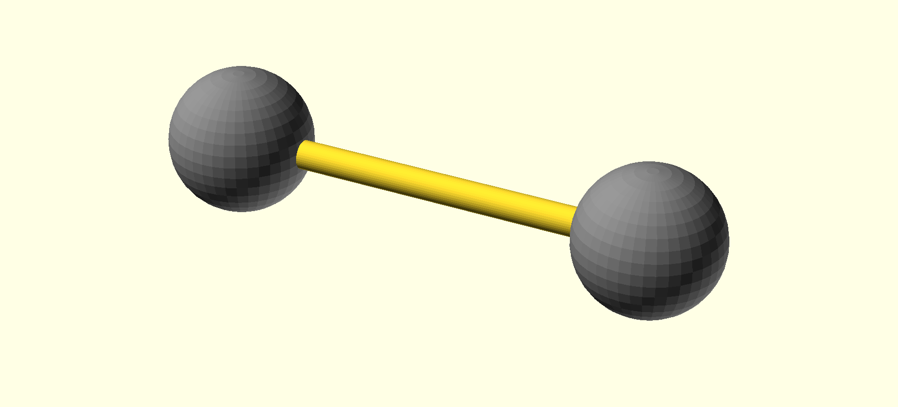
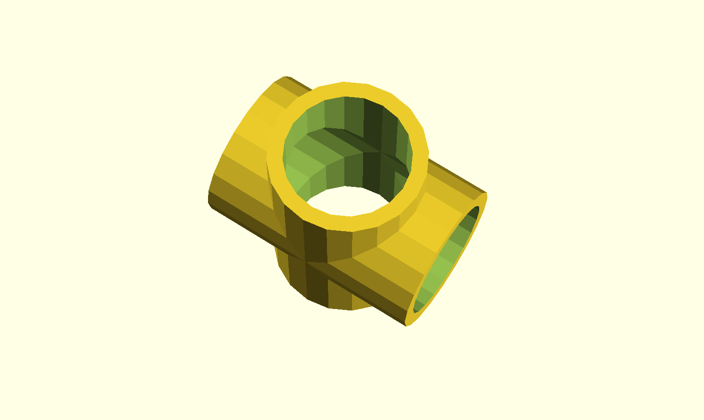
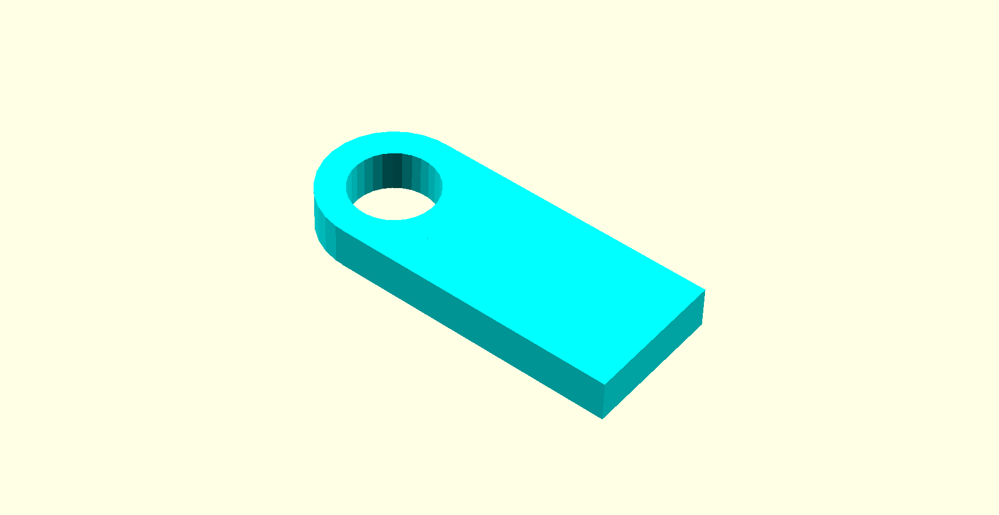

| Group | Members |
|---|---|
| A | Enayet, Dorothy, Sachi |
| B | Jonathan, Amber, Talia |
| C | Jennifer, Bateel, Sanie, Kim |
| D | Danielle, Jane, Gabriel |
Keep Sketching!
Explore OpenSCAD. Focus this week on creating 3D objects with code.
Required!
Choose one of your sketches to 3D print. 3D print it. Photograph it nicely. Post to the site.
Your printed sketch should take up two or three posts. The first posts will show in-progress or finished OpenSCAD renderings. The final post should be a photo of the finished print. Complete your posts before our next class, and bring your 3d print to class.
Tips:
OpenSCAD is “The Programmers Solid 3D CAD Modeller”
.stl for 3D printing, machiningOpenSCAD is pretty well documented.
The documentation includes a great cheatsheet, in depth documentation of the built in functions and syntax, tutorials, examples and videos.
I recommend starting by reading over the entire CheatSheet once, thining about what each command probably does. After that, read the the docs for sphere, translate, union, and *. This will let you see how the docs are written and teach you a little about the language itself. Finally, look at some of the examples packaged with the application, read the code and try changing a few things. At this point, you should be able to start on making some simple sketches.
Lets Make a Lego Brick!
First we need the dimensions of Lego bricks.
$fn = 20;
// $fn controls the detail on curves
% cube([8,8,9.6], true);
// what does removing the % do?
// what if `true` were `false`?
cylinder(h=1.8, r=2.4, center=true);
// OpenSCAD supports both named parameters, which can make code more clear.
// You can also use ordered params, this works too:
// cylinder(1.8, 2.4, 2.4, true);

$fn = 20;
color("SlateBlue") {
cube([8,8,9.6], true);
}
// you can use `color` to change the color used to render a part
// I mostly use this to make my 3D render easier to understand
translate([0,0,9.6 * .5 + 1.8 * .5]) {
cylinder(h=1.8, r=2.4, center=true);
}
// We want our knob on top of our block, not inside.
// `translate` moves it up.
// Notice that this syntax looks a lot like c/javascript at first glance
// but works very differently.

$fn = 20;
difference() {
union() {
cube([8,8,9.6], true);
translate([0,0,9.6 * .5 + 1.8 * .5]) {
cylinder(h=1.8, r=2.4, center=true);
}
}
// first combine the block and the knob
translate([0,0, -9.6 * .5 + 1.8 * .5]) {
cylinder(h=1.8, r=2.4, center=true);
}
// create a cylinder for the hole
}
// remove the hole from the block+knob
// This object probably won't preview very cleanly for you.
// Rendering the object should fix that.
// Main Menu >> Design >> Render

$fn = 20;
brick_width = 8;
brick_height = 9.6;
knob_radius = 2.4;
knob_height = 1.8;
difference() {
union() {
cube([brick_width, brick_width, brick_height], true);
translate([0, 0, (brick_height + knob_height) * .5]) {
cylinder(h=knob_height, r=knob_radius, center=true);
}
}
translate([0,0, (-brick_height + knob_height) * .5]) {
cylinder(h=knob_height, r=knob_radius, center=true);
}
}
$fn = 20;
brick_width = 8;
brick_height = 9.6;
knob_radius = 2.4;
knob_height = 1.8;
rows = 2;
columns = 8;
module unit_brick () {
difference() {
union() {
cube([brick_width, brick_width, brick_height], true);
translate([0, 0, (brick_height + knob_height) * .5]) {
cylinder(h=knob_height, r=knob_radius, center=true);
}
}
translate([0,0, (-brick_height + knob_height) * .5]) {
cylinder(h=knob_height, r=knob_radius, center=true);
}
}
}
for (x = [0:columns-1], y = [0:rows-1]) {
translate([x*brick_width, y*brick_width, 0]) {
unit_brick();
}
}
// `for` looks alot like a c/javascript loop but works very differently
// the example above uses a single `for` loop here enumerates all the combinations over x and y
// in c/javascript you would use a nested pair of loops to achieve this
// also notice that the for is also an implicit `union`, the loop output is merged

  